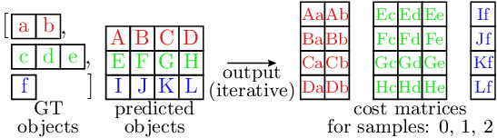
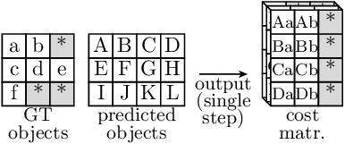
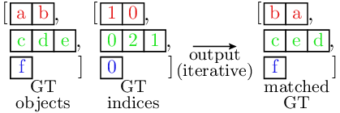
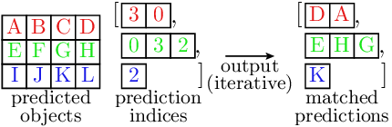
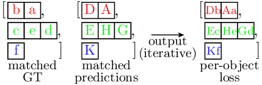
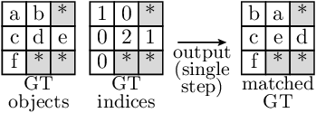
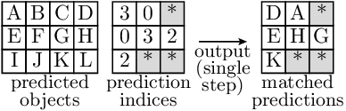
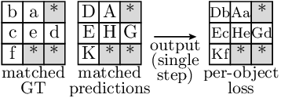

Example
Here, we provide an example of how to use the batching-helpers package to implement object detection loss, including
Handling of per-sample (i.e. non-batched) input data
Matching between predictions and ground truth (GT) objects as a pre-requisite for the actual loss computation
Loss computation of different types:
Based on direct object-to-object comparisons (in this example: classification and bounding box regression losses)
Computed for all predictions, but utilizing the matching results (in this example: existence loss)
The implementation of the loss computation is fully shown in the code snippets in this document. The complete implementation (including helpers providing example input data to actually run the code) can be found in the example folder of the batching-helpers package.
Important
You can run the example using the script packages/batching_helpers/example/example.py.
Overview
The loss computation implementation consists of three main steps:
Conversion of ground truth per-sample data into
RaggedBatchinstancesMatching predictions to ground truth objects
Loss computation
The following code snippet demonstrates this high-level approach. Step (1) is fully covered here, while steps (2) and (3) are detailed in subsequent sections.
1# Copyright (c) 2025, NVIDIA CORPORATION & AFFILIATES. All rights reserved.
2#
3# Licensed under the Apache License, Version 2.0 (the "License");
4# you may not use this file except in compliance with the License.
5# You may obtain a copy of the License at
6#
7# http://www.apache.org/licenses/LICENSE-2.0
8#
9# Unless required by applicable law or agreed to in writing, software
10# distributed under the License is distributed on an "AS IS" BASIS,
11# WITHOUT WARRANTIES OR CONDITIONS OF ANY KIND, either express or implied.
12# See the License for the specific language governing permissions and
13# limitations under the License.
14
15import torch
16
17# Import the batching-helpers package
18import accvlab.batching_helpers as batching_helpers
19
20# Import the matcher and loss computation modules (parts of the example implementation)
21from matcher import Matcher
22from loss_computation import LossComputation
23
24# Import the example input data (helper for running the example)
25import input_data
26
27
28def loss_computation_main(rects_gt, classes_gt, rects_pred, classes_pred, pred_existence, weights_gt):
29
30 # ===== Step 1: Conversion of the GT per-sample data to RaggedBatch instances =====
31
32 # @NOTE
33 # Typically, the ground truth (GT) is provided as a list containing per-sample GT data as individual
34 # tensors. Here, this format is converted into RaggedBatch objects containing the whole batch.
35 # Note that except for the first call, a `other_with_same_sample_sizes` parameter is present. This
36 # is optional, but saves memory by re-using the `mask` and `sample_sizes` (see `RaggedBatch`
37 # documentation) of the first created instance. This is possible as all the GT data refers to the same
38 # objects, so that for a given sample, the number of objects is the same for the different types of GT
39 # data.
40 rects_gt_compact = batching_helpers.combine_data(rects_gt)
41 classes_gt_compact = batching_helpers.combine_data(
42 classes_gt, other_with_same_sample_sizes=rects_gt_compact
43 )
44 weights_gt_compact = batching_helpers.combine_data(
45 weights_gt, other_with_same_sample_sizes=rects_gt_compact
46 )
47
48 # ===== Step 2: Matching of the predictions to the GT objects =====
49
50 # @NOTE
51 # Get the matches for the individual samples. `matched_gt_indices` and `matched_pred_indices` contain
52 # indices for matches for the GT and predictions, respectively. As each sample contains a different number
53 # of matches, `RaggedBatch` instances are used to store the indices for both the GT and the predictions.
54 matcher = Matcher()
55 matched_gt_indices, matched_pred_indices = matcher(
56 rects_gt_compact, classes_gt_compact, rects_pred, classes_pred
57 )
58
59 # ===== Step 3: The actual loss computation =====
60
61 # @NOTE
62 # Compute the actual loss given GT and prediction data, as well as the matches established by the matcher.
63 loss_comp = LossComputation()
64 per_sample_loss = loss_comp(
65 rects_gt_compact,
66 classes_gt_compact,
67 rects_pred,
68 classes_pred,
69 pred_existence,
70 weights_gt_compact,
71 matched_gt_indices,
72 matched_pred_indices,
73 )
74
75 # @NOTE
76 # The loss computation returns per-sample losses, and they can be used as such after the computation
77 # (e.g. logged, weighted, etc.). Here, we just sum the per-sample losses to obtain the final loss.
78 final_loss = torch.sum(per_sample_loss)
79 return final_loss
80
81
82if __name__ == "__main__":
83 loss = loss_computation_main(
84 input_data.rects_gt,
85 input_data.classes_gt,
86 input_data.rects_pred,
87 input_data.classes_pred_onehot,
88 input_data.pred_existence,
89 input_data.weights_gt,
90 )
91 print(f"Loss: {loss}")
Matcher
Efficient Implementation Approach
The matcher implementation is designed to be efficient on the GPU. The matching consists of two steps, namely the cost matrix computation and the Hungarian matching based on the costs. As the matching itself is on the CPU (and remains non-batched), performance gains are mainly achieved through the batched cost matrix computation.
The cost matrices are structured as follows: For each sample, the cost matrix denotes the cost of each
possible match between a prediction and a GT object. For example, for a match of prediction i and a GT
object j, the cost is cost_matrix[i, j]. This means that for each sample, the cost matrix is of size
(num_predictions, num_gt_objects), and each element is computed from one prediction and one GT object.
Non-batched Approach
The following figure shows typical non-batched cost matrix computation:

In the illustration, the different colors represent the individual samples, and each sample corresponds to one computation iteration. Note that:
The GT data is of variable size (and therefore stored as a list of per-sample tensors, not a single tensor)
Due to the variable GT size, the sizes of the cost matrices are also variable in the dimension iterating over the GT objects (dim==1; horizontal axis in the figure)
Due to this variable size, batched implementation is challenging and in practice, the cost matrix computation is often implemented in a non-batched manner.
Batched Approach
The following figure illustrates how the matching can be implemented in a batched manner using the batching-helpers package:

Gray elements represent filler values that allow uniform batch processing while preserving variable ground
truth sizes. The RaggedBatch class as well as the available helper functions
handle these values automatically. Please refer to the API documentation for details.
The key implementation principles to achieve batched processing are:
Ground truth data for all samples is stored in a single
RaggedBatchinstance for batched processing with variable sizes (as shown in the figure)Cost matrices also use
RaggedBatchformat with the non-uniform dimension being the dimension iterating over the ground truth elements (as shown in the figure)Handling of the non-uniform size:
During the cost matrix computation, uniform sample sizes are assumed (i.e. no differentiation between data and filler values), enabling the use of standard PyTorch operations or e.g. already implemented custom implementations of batched cost functions
After the computation, the results are wrapped in a
RaggedBatchinstance, which enables easy handling of the filler values. Here, the samples sizes of the input GT data can be re-used, so that they do not need to be set up manually.
Note that this approach means that computations are also performed for the filler values, which leads to some overhead. However, this overhead is typically much smaller than the gains of the batched implementation, which reduces the CPU (Python) overhead and improves the GPU utilization for the individual operations.
Implementation
The matcher implementation is shown in the following snippet, with the core functionality residing in the __call__() method. The matcher employs various cost functions. These cost functions do not explicitly handle non-uniform batches, instead assuming a fixed size for the individual samples. As discussed above, this means that existing batched implementations of such cost functions can be readily re-used.
The handling of non-uniform batches in the resulting cost matrices is achieved by wrapping the results as
RaggedBatch instances, where the number of valid GT objects is known from
the input GT data (see the comments in __call__() for implementation specifics).
Note: The core matching operation (scipy.optimize.linear_sum_assignment()) is performed on the CPU and
remains non-batched. The batching-helpers package facilitates integration of non-batched operations through
split() and combine_data()
functions.
1# Copyright (c) 2025, NVIDIA CORPORATION & AFFILIATES. All rights reserved.
2#
3# Licensed under the Apache License, Version 2.0 (the "License");
4# you may not use this file except in compliance with the License.
5# You may obtain a copy of the License at
6#
7# http://www.apache.org/licenses/LICENSE-2.0
8#
9# Unless required by applicable law or agreed to in writing, software
10# distributed under the License is distributed on an "AS IS" BASIS,
11# WITHOUT WARRANTIES OR CONDITIONS OF ANY KIND, either express or implied.
12# See the License for the specific language governing permissions and
13# limitations under the License.
14
15import torch
16import accvlab.batching_helpers as batching_helpers
17from scipy.optimize import linear_sum_assignment
18
19
20class Matcher:
21
22 def __call__(self, rects_gt, classes_gt, rects_pred, classes_pred):
23 # @NOTE
24 # Get the cost matrices denoting the cost for each GT to prediction combination. Note that as the
25 # samples in the GT data are padded to uniform size (see documentation of `RaggedBatch.tensor`), the
26 # same will be true for the matrices.
27 batch_size = rects_gt.shape[0]
28 iou_cost_matrices = self._iou_cost_func(rects_gt.tensor, rects_pred)
29 class_cost_matrices = self._class_l1_cost_func_gt_labels(classes_gt.tensor, classes_pred)
30 total_cost_matrices = iou_cost_matrices + class_cost_matrices
31
32 # @NOTE
33 # During cost matrix computation, we assume uniform batch size (and use filler values). However, the
34 # valid cost matrices are non-uniform in size. Along `dim==2` (iterating over the GT objects), the
35 # sample sizes correspond to the sample sizes of the GT inputs (there, along `dim==1`). Create a
36 # RaggedBatch containing the matrices. Note that this will correctly handle the filler regions in the
37 # matrices, as they exactly correspond to the format used in `RaggedBatch.tensor`. This is as follows:
38 # - In the input data to the matrix computations originally from `RaggedBatch` instances, the filler
39 # values are in the correct format (i.e. always after the valid data)
40 # - The matrix computations do not perform any permutations of the data, so that the filler values
41 # remain in the same locations (but along a different dimension)
42 total_cost_matrices = classes_gt.create_with_sample_sizes_like_self(
43 total_cost_matrices, non_uniform_dim=2
44 )
45
46 # @NOTE
47 # The Hungarian matching is done on the CPU one sample at a time. Therefore, move the data to the CPU
48 # and split RaggedBatch instances containing the cost matrices into individual samples. Note that
49 # `split()` removes the filler value padding, so that the valid matrices with correct sample sizes are
50 # obtained.
51 device_cpu = torch.device("cpu")
52 total_cost_matrices_cpu = total_cost_matrices.to_device(device_cpu)
53 total_cost_matrices_list = total_cost_matrices_cpu.split()
54
55 # @NOTE: Perform matching for each sample
56 matched_gt_index_list = [None] * batch_size
57 matched_pred_index_list = [None] * batch_size
58 for i, cost_mat in enumerate(total_cost_matrices_list):
59 m_pred, m_gt = linear_sum_assignment(cost_mat)
60 matched_gt_index_list[i] = torch.tensor(m_gt, dtype=torch.int64, device=device_cpu)
61 matched_pred_index_list[i] = torch.tensor(m_pred, dtype=torch.int64, device=device_cpu)
62
63 # @NOTE
64 # Combine resulting indices for the individual samples into RaggedBatch instances representing the
65 # whole batch.
66 matched_gt_indices = batching_helpers.combine_data(matched_gt_index_list)
67 matched_pred_indices = batching_helpers.combine_data(
68 matched_pred_index_list, other_with_same_sample_sizes=matched_gt_indices
69 )
70 # @NOTE: Move results to the GPU
71 matched_gt_indices = matched_gt_indices.to_device(device=rects_gt.device)
72 matched_pred_indices = matched_pred_indices.to_device(device=rects_gt.device)
73
74 return matched_gt_indices, matched_pred_indices
75
76 # Example batched cost function for the matcher. It is used in the example, but the implementation
77 # of this function is not the focus of the example.
78 @staticmethod
79 def _iou_cost_func(rects_gt, rects_pred, eps=1e-6):
80
81 # With broadcasting, using the `_ext` variants will lead to pair-wise results for all possible
82 # combinations
83 rects_gt_ext = rects_gt.unsqueeze(1)
84 rects_pred_ext = rects_pred.unsqueeze(2)
85
86 areas_gt = torch.prod(rects_gt_ext[..., 2:4] - rects_gt_ext[..., 0:2], axis=-1)
87 areas_pred = torch.prod(rects_pred_ext[..., 2:4] - rects_pred_ext[..., 0:2], axis=-1)
88
89 rects_gt_ul = rects_gt_ext[..., 0:2]
90 rects_gt_lr = rects_gt_ext[..., 2:4]
91 rects_pred_ul = rects_pred_ext[..., 0:2]
92 rects_pred_lr = rects_pred_ext[..., 2:4]
93
94 intersections_ul = torch.max(rects_gt_ul, rects_pred_ul)
95 intersections_lr = torch.min(rects_gt_lr, rects_pred_lr)
96 sizes_intersections = intersections_lr - intersections_ul
97 sizes_intersections[sizes_intersections < 0.0] = 0.0
98 areas_intersections = torch.prod(sizes_intersections, axis=-1)
99
100 areas_union = areas_gt + areas_pred - areas_intersections
101 areas_union[areas_union < eps] = eps
102
103 res = 1.0 - areas_intersections / areas_union
104
105 return res
106
107 # Example batched cost function for the matcher. It is used in the example, but the implementation
108 # of this function is not the focus of the example.
109 @staticmethod
110 def _class_l1_cost_func_gt_labels(classes_gt, classes_pred_one_hot):
111
112 # Internal helper function
113 def class_l1_cost_func_gt_one_hot(classes_gt_one_hot, classes_pred_one_hot):
114 prod = torch.einsum('bik,bjk->bij', classes_pred_one_hot, classes_gt_one_hot)
115 cost = 1.0 - prod
116 return cost
117
118 # Note: This part of the loss computation is not computed in a batched manner. However, this
119 # is not the focus of the example and in an actual application, the loss can be implemented
120 # differently (e.g. custom extension).
121 num_classes = classes_pred_one_hot.shape[-1]
122 batch_size = classes_gt.shape[0]
123 res = [None] * batch_size
124 for s, gt in enumerate(classes_gt):
125 res_s = torch.zeros((gt.shape[0], num_classes), dtype=torch.float32, device=gt.device)
126 for i, cls in enumerate(gt):
127 res_s[i, cls] = 1.0
128 res[s] = res_s
129 classes_gt_one_hot = torch.stack(res, dim=0)
130 # end of non_batched part
131 cost = class_l1_cost_func_gt_one_hot(classes_gt_one_hot, classes_pred_one_hot)
132 return cost
Loss Computation
Efficient Implementation Approach
Similar to the matcher, the efficiency is improved by enabling batching where it was previously challenging to achieve. For most loss types, the loss is computed by an element-wise (i.e. object for object) comparison between the predictions and the GT objects. Here, the corresponding (according to the matching) GT and prediction objects need to be extracted first, followed by the actual loss computation.
Note that the existence loss is computed differently, as it is not based on a direct object-to-object comparison. The existence loss is not discussed here, but it also benefits from batched implementation in a similar way. It is part of the example implementation, so please refer to the code snipped further below for details.
Non-batched Approach
The loss computation is comprised of two steps. First, the corresponding objects for the predictions and the GT are extracted.
Ground truth object extraction at matched indices:

Note that here, both the GT objects and the indices are lists of tensors. Similar to the matcher, different samples are indicated by different colors, and are typically processed sequentially, one sample at a time.
Similarly, the predictions at the matched indices are extracted as follows:

This step is very similar to the GT object processing shown above. A notable difference is that the predictions are stored as a single tensor, as the predictions are outputs of the trained model and their number is typically fixed. However, as the number of matches varies between samples, the indices are stored as a list of tensors, preventing the use of a single tensor in the output.
Finally, the loss is computed by comparing the predictions and the GT objects.

Batched Approach
Similarly to the matcher, the loss computation is done in a batched manner by using the
RaggedBatch format.
The extraction of the GT objects is done as follows:

Similarly, the predictions are extracted as follows:

Finally, the loss is computed by comparing the predictions and the GT objects.

Note that all operations are performed in a batched manner. For the indexing operation, the function
batched_indexing_access() is used.
Similar to the matcher, we also process filler values in the loss function(s), which leads to some overhead.
However, this is typically far outweighed by the performance gains of the batched implementation.
Here, we discussed the loss implementation as is e.g. used in the classification and bounding box regression losses in the implementation above. Note that e.g. the existence loss follows a different approach. However, the same principles apply.
Implementation
The loss function takes two key inputs:
Ground truth objects and predictions (same as matcher)
Matching results mapping predictions to corresponding ground truth objects
Loss functions operate on batched data assuming uniform sample sizes (similar to the cost functions employed by the matcher), allowing direct reuse of existing batched implementations. See the __call__() method comments for implementation details.
1# Copyright (c) 2025, NVIDIA CORPORATION & AFFILIATES. All rights reserved.
2#
3# Licensed under the Apache License, Version 2.0 (the "License");
4# you may not use this file except in compliance with the License.
5# You may obtain a copy of the License at
6#
7# http://www.apache.org/licenses/LICENSE-2.0
8#
9# Unless required by applicable law or agreed to in writing, software
10# distributed under the License is distributed on an "AS IS" BASIS,
11# WITHOUT WARRANTIES OR CONDITIONS OF ANY KIND, either express or implied.
12# See the License for the specific language governing permissions and
13# limitations under the License.
14
15import torch
16import accvlab.batching_helpers as batching_helpers
17
18
19class LossComputation:
20
21 def __call__(
22 self,
23 bboxes_gt,
24 classes_gt,
25 bboxes_pred,
26 classes_pred,
27 existence_pred,
28 weights_gt,
29 matches_gt,
30 matches_pred,
31 ):
32 # @NOTE
33 # Extract matched ground truth and prediction data using the indices from matching.
34 # This creates element-wise correspondences between GT and prediction objects,
35 # enabling direct comparison in subsequent loss computations.
36 # See `batching_helpers.batched_indexing_access()` documentation for details.
37 cls_gt_matched = batching_helpers.batched_indexing_access(classes_gt, matches_gt).to_dtype(
38 torch.int64
39 )
40 cls_pred_matched = batching_helpers.batched_indexing_access(classes_pred, matches_pred)
41 bbxs_gt_matched = batching_helpers.batched_indexing_access(bboxes_gt, matches_gt)
42 bbxs_pred_matched = batching_helpers.batched_indexing_access(bboxes_pred, matches_pred)
43 weights_matched = batching_helpers.batched_indexing_access(weights_gt, matches_gt)
44
45 # @NOTE
46 # Compute (per-object) losses. Note that this is a batched operation and furthermore, that the
47 # loss functions themselves are not specifically implemented for non-uniform batches and do not
48 # distinguish between actual objects and filler entries in the data. This means that
49 # in a real use-case, already available batched loss functions can be readily re-used.
50 #
51 # Also, please note that the loss functions do not reduce over the individual objects/targets.
52 # This enables us to wrap the per-object losses as `RaggedBatch` instances and use the
53 # `RaggedBatch` and `batching-helpers` functionality to handle the non-uniform sample sizes (e.g.
54 # when summing/averaging over the valid entries only).
55 #
56 # Note that other ways of handling the padded entries are also possible if the loss functions do
57 # reduce over the objects. One possible way is to provide appropriate (0.0) weights for the padded
58 # entries (however, be cautious of potential NaN values when using this approach).
59 class_per_object_loss_data = self._per_object_class_l1_loss_labels_gt(
60 cls_gt_matched.tensor, cls_pred_matched.tensor, weights_matched.tensor
61 )
62 bbox_per_object_loss_data = self._per_object_bbox_overlap_loss(
63 bbxs_gt_matched.tensor, bbxs_pred_matched.tensor, weights_matched.tensor
64 )
65
66 # @NOTE
67 # Wrap the per-object losses as `RaggedBatch` instances. Similarly to the cost matrices in the
68 # matcher, this can be done as the filler elements in the loss tensors are located where the
69 # `RaggedBatch` implementation expects them (as the filler locations in the loss computation inputs
70 # were defined by the `RaggedBatch` instances containing the input data, and no permutations of
71 # objects are performed in the loss computation).
72 class_per_object_loss = cls_gt_matched.create_with_sample_sizes_like_self(
73 class_per_object_loss_data, non_uniform_dim=1
74 )
75 bbox_per_object_loss = bbxs_gt_matched.create_with_sample_sizes_like_self(
76 bbox_per_object_loss_data, non_uniform_dim=1
77 )
78
79 # @NOTE
80 # Sum up loss for the individual objects. As the loss functions do not explicitly handle the padded
81 # entries, the loss computation is also performed for those. This means that the filler entries may
82 # contain non-zero values (including `NaN`). Therefore, the filler values would potentially influence
83 # the sum if taken into consideration. This means we cannot use `torch.sum()` directly. Instead, we
84 # use the `sum_over_targets()` function provided by the `batching-helpers` package.
85 class_loss = batching_helpers.sum_over_targets(class_per_object_loss)
86 bbox_loss = batching_helpers.sum_over_targets(bbox_per_object_loss)
87
88 # @NOTE
89 # Compute existence loss next. This loss is different from the other losses in that the computation is
90 # done for all predictions, not only the matched ones.
91
92 # @NOTE
93 # First, create a mask which is `True` for existing (matched) targets and `False` for non-existent
94 # ones. The mask is created from the indices of the matched predictions (also see the
95 # `batching_helpers.get_mask_from_indices()` documentation).
96 existence_mask = batching_helpers.get_mask_from_indices(existence_pred.shape[1], matches_pred)
97
98 # @NOTE
99 # Additionally, compute the overlap (`1.0 - bbox_per_target_loss`) and use it as a weight in the
100 # existence loss (in combination with the weights from `weights_gt`) as follows:
101 # - Use the so computed weights directly for the matched objects
102 # - Compute average value and use it for the non-matched objects
103 # In addition, apply a compensation factor between existing and non-existing objects to the
104 # non-matched objects in order to account for the imbalance.
105 #
106 # To obtain the overall weights used for all predictions, the following steps are performed:
107 # 1. Compute the overlap weights for the matched objects (from `bbox_per_object_loss`)
108 # 2. Combine the overlap weights with `weights_matched` (which contains the values from `weights_gt`
109 # for the matched objects) to obtain `existence_weights_matched`.
110 # 3. Map the resulting `existence_weights_matched` back to all predictions & also set the weights for
111 # non-existent (i.e. non-matched) predictions in the process. This is done as follows:
112 # a) First compute the per-sample mean values of `existence_weights_matched` (averaging over the
113 # existing objects) to obtain `weights_means`.
114 # b) Then, compute per-sample `imbalance_factors` compensating for the imbalance between existing
115 # and non-existing objects.
116 # c) Multiply the `weights_means` with `imbalance_factors` to obtain `weights_mean_adjusted`.
117 # d) Initialize `existence_weights_preds` (which contains the weights for all predictions and is of
118 # corresponding shape) with the values from `weights_mean_adjusted`. These initial values are the
119 # weights for the non-matched predictions.
120 # e) Write the values from `existence_weights_matched` into
121 # `batching_helpers.batched_indexing_write()` for the matched predictions (i.e. use the weights
122 # in `existence_weights_matched` for those), while leaving the other values (i.e. non-matched)
123 # unchanged.
124 #
125 # The points above are implemented as follows:
126
127 # @NOTE
128 # 1. Compute the overlap weights for the matched bboxes (from `bbox_per_object_loss`).
129 #
130 # Note the use of the `apply()` convenience method to apply a function to the data tensor (i.e.
131 # `tensor`) of the `RaggedBatch` instance. The line:
132 # >>> overlap_weights_matched = bbox_per_object_loss.apply(lambda tensor: 1.0 - tensor)
133 # is equivalent to:
134 # >>> tensor = bbox_per_object_loss.tensor
135 # >>> tensor = 1.0 - tensor
136 # >>> overlap_weights_matched = bbox_per_object_loss.create_with_sample_sizes_like_self(tensor)
137 # Note that the `apply()` method returns a new `RaggedBatch` instance. Also, the passed function
138 # may accept more than one argument, in which case `sample_sizes` and `mask` are also passed to
139 # the function (but should not be modified). Please refer to the documentation of
140 # `RaggedBatch.apply()` for more details.
141 overlap_weights_matched = bbox_per_object_loss.apply(lambda tensor: 1.0 - tensor)
142
143 # @NOTE
144 # 2. Combine the overlap weights with `weights_matched` (which contains the values from `weights_gt`
145 # for the matched objects).
146 #
147 # Note that here, data tensors of two `RaggedBatch` instances are processed in the lambda function.
148 # As both `RaggedBatch` instances represent the same sample sizes and non-uniform dimension, it does
149 # not matter which one calls the `apply()` method and for which one the data tensor is accessed as
150 # `.tensor`.
151 existence_weights_matched = weights_matched.apply(
152 lambda tensor: tensor * overlap_weights_matched.tensor
153 )
154
155 # @NOTE
156 # 3a). First compute the per-sample mean values of `existence_weights_matched` (averaging over the
157 # existing objects) to obtain `weights_means`.
158 #
159 # As the target dimension is padded, `torch.mean()` cannot be used both
160 # - for the reasons discussed above for summation over objects (i.e. the number of actual objects
161 # does not necessarily correspond to the tensor size)
162 # - because `torch.mean()` would divide the sum by a wrong number of elements for samples containing
163 # filler elements
164 # Instead, we use the method provided by the `batching-helpers` package:
165 weights_means = batching_helpers.average_over_targets(existence_weights_matched)
166
167 # @NOTE
168 # 3b). Then, compute per-sample `imbalance_factors` compensating for the imbalance between existing
169 # and non-existing objects.
170 #
171 # First, obtain the number of predictions.
172 num_preds = bboxes_pred.shape[1]
173 # @NOTE
174 # Then, compute the imbalance correction factor as follows:
175 # - Divide by the number of non-existent targets
176 # (i.e. `num_preds - overlap_weights_matched.sample_sizes`)
177 # - Multiply by the number of existing targets (i.e. `overlap_weights_matched.sample_sizes`)
178 # Note that the `nan_to_num()` function is used to handle the case where the number of non-existent
179 # targets is zero.
180 imbalance_factors = torch.nan_to_num(
181 overlap_weights_matched.sample_sizes / (num_preds - overlap_weights_matched.sample_sizes), 0.0
182 )
183
184 # @NOTE
185 # 3c). Multiply the `weights_means` with `imbalance_factors` to obtain `weights_mean_adjusted`.
186 weights_mean_adjusted = weights_means * imbalance_factors
187
188 # @NOTE
189 # 3d). Initialize `existence_weights_preds` (which contains the weights for all predictions and is of
190 # corresponding shape) with the values from `weights_mean_adjusted`. These initial values are the
191 # weights for the non-matched predictions.
192 existence_weights_preds = weights_mean_adjusted.unsqueeze(-1).repeat(1, classes_pred.shape[1])
193
194 # @NOTE
195 # 3e). Write the values from `existence_weights_matched` into `existence_weights_preds` for the
196 # matched predictions (i.e. use the weights in `existence_weights_matched` for those), while
197 # leaving the other values unchanged.
198 #
199 # Note that the `batched_indexing_write()` function is equivalent to `__setitem__()` for the unbatched
200 # (single-sample) case using the build-in tensor indexing operator.
201 existence_weights_preds = batching_helpers.batched_indexing_write(
202 existence_weights_matched, matches_pred, existence_weights_preds
203 )
204
205 # @NOTE
206 # Compute existence loss (considering all predictions, not only the matched ones).
207 # Note that the loss has uniform size, and therefore we can directly use `torch.sum()`
208 # to sum over the objects.
209 existence_per_object_loss = self._per_object_existence_loss(
210 existence_pred, existence_mask, existence_weights_preds
211 )
212 existence_loss = torch.sum(existence_per_object_loss, 1)
213
214 # @NOTE
215 # Sum up all losses & return result.
216 loss = class_loss + bbox_loss + existence_loss
217 return loss
218
219 # Example loss function for the loss computation. This is not the focus of the example.
220 @staticmethod
221 def _per_object_class_l1_loss_labels_gt(classes_gt, classes_pred, weights):
222
223 def per_object_class_l1_loss_one_hot_gt(classes_gt, classes_pred, weights):
224
225 diff = torch.abs(classes_gt - classes_pred)
226 weighted_diff = weights.unsqueeze(-1) * diff
227
228 # Compute the sum over the classes
229 res = torch.sum(weighted_diff, dim=2)
230
231 return res
232
233 # Note: This part of the loss computation is not batched. However, we do not focus on loss
234 # function implementation here and in a practical application, the loss can be implemented
235 # differently (e.g. custom PyTorch extension).
236 num_classes = classes_pred.shape[-1]
237 batch_size = classes_gt.shape[0]
238 res = [None] * batch_size
239 for s, gt in enumerate(classes_gt):
240 res_s = torch.zeros((gt.shape[0], num_classes), dtype=torch.float32, device=gt.device)
241 for i, label in enumerate(gt):
242 res_s[i, label] = 1.0
243 res[s] = res_s
244 classes_gt_one_hot = torch.stack(res, dim=0)
245 # end of non_batched part
246 res = per_object_class_l1_loss_one_hot_gt(classes_gt_one_hot, classes_pred, weights)
247 return res
248
249 # Example batched loss function. It is used in the example, but the implementation
250 # of this function is not the focus of the example.
251 @staticmethod
252 def _per_object_bbox_overlap_loss(bboxes_gt, bboxes_pred, weights, eps=1e-6):
253 areas_gt = torch.prod(bboxes_gt[..., 2:4] - bboxes_gt[..., 0:2], axis=-1)
254 areas_pred = torch.prod(bboxes_pred[..., 2:4] - bboxes_pred[..., 0:2], axis=-1)
255
256 rects_gt_ul = bboxes_gt[..., 0:2]
257 rects_gt_lr = bboxes_gt[..., 2:4]
258 rects_pred_ul = bboxes_pred[..., 0:2]
259 rects_pred_lr = bboxes_pred[..., 2:4]
260
261 intersections_ul = torch.max(rects_gt_ul, rects_pred_ul)
262 intersections_lr = torch.min(rects_gt_lr, rects_pred_lr)
263 sizes_intersections = intersections_lr - intersections_ul
264 sizes_intersections[sizes_intersections < 0.0] = 0.0
265 areas_intersections = torch.prod(sizes_intersections, axis=-1)
266
267 areas_union = areas_gt + areas_pred - areas_intersections
268 areas_union[areas_union < eps] = eps
269
270 target_loss = 1.0 - areas_intersections / areas_union
271
272 target_loss = target_loss * weights
273
274 return target_loss
275
276 # Example batched loss function. It is used in the example, but the implementation
277 # of this function is not the focus of the example.
278 @staticmethod
279 def _per_object_existence_loss(existence_pred, existence_mask, weights):
280 existence_gt = existence_mask.to(dtype=torch.float32)
281 diff = torch.abs(existence_pred - existence_gt)
282 loss = weights * diff
283 return loss